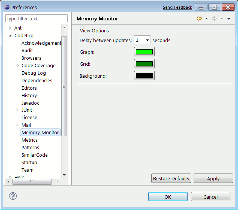

Preferences - Memory Monitor This page is used to control the CodePro Memory Monitor options. Delay between updatesThis options determines how often the Memory Monitor updates its memory usage graph. Graph colorThis options determines the color of the memory graph. Grid colorThis options determines the color of the grid lines. Background colorThis options determines the background color of the graph. |